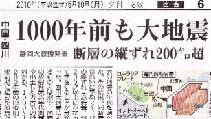
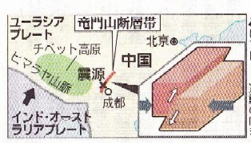

（214）スーパー竜門
先月（A.F.10.5.8） 鯉魚躍竜門をUPした直後の5.10、毎日新聞の６面に目を惹く記事が掲載されていた。地図の部分を拡大すると↓
なんと 龍門山に端を発した大断層まであったとは(゜０゜) そんなものあって欲しいものではないが、ちょうど登竜門をテーマに牌謎を作ったばかりだったので興味を惹かれた。索子のメンチンを
マチでテンパイした。たとえメンチンでも
しかし
解答